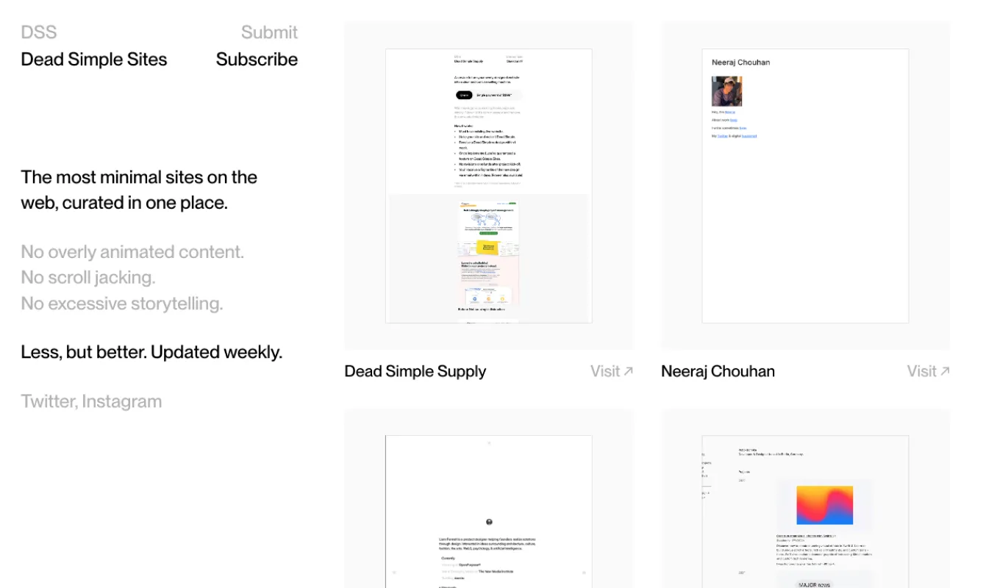
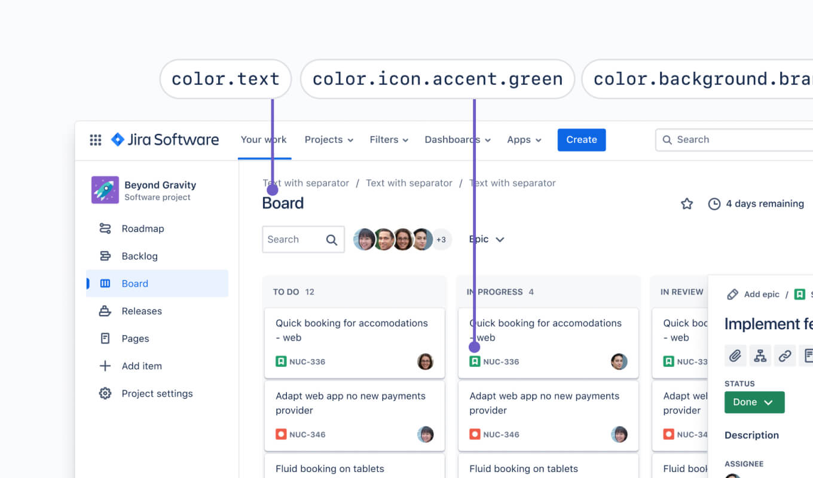

Best free web design inspiration sites in 2026
My go-to free web design inspiration sites with detailed breakdowns to help inspire you on your next web design project.

One of the hardest parts of a web design project is getting started, especially when you’re experiencing creative block. One of the best ways to push through this barrier is to look at other websites for inspiration. I’ve been designing websites for decades and over the years I’ve collected my go-to free web design inspiration sites.
With so many free web design inspiration sites out there, it’s difficult to know which ones to use, so I’ve compared the top sites based on how often they’re updated, their search filter functionality, website previews, newsletters, and social media channels. I’ve also pulled out my top 3 free web design inspiration sites to make it even easier. I hope you find them helpful and inspiring.
3 best free web design inspiration sites
With so many awesome free web design inspiration sites, it was hard to narrow it down to just 3. Each of these 3 sites excels across most of the judging criteria, so I’m sure they’ll help inspire you while working on your next web design project.
Awwwards

| Updated: | Daily |
| Community submissions: | Paid |
| Curation: | Judging panel with scoring system |
| Filters: | Search, industry, technology, page type, component, colour |
| Website preview: | Desktop image slideshow |
| Newsletter: | No |
| Social media channels: | X, Instagram, Facebook, LinkedIn, Youtube, Tiktok, Pinterest |
Awwwards has been around for longer than I can remember and they’ve always been one of the top free web design inspiration sites. Their site features a curated collection of visually stunning and technically impressive websites, rated by experts on design, usability, creativity, and content.
Awwwards is a bit different to most web design inspiration sites, as designers need to submit their website for consideration by the expert judging panel. Each day, the judging panel will vote for the highly coveted “site of the day”, which is featured on the website homepage. I was lucky enough to win site of the day for my portfolio website back in 2010.
With so many website submissions from top designers around the world and such a rigorous voting process, the result is a highly curated collection of daily web design inspiration from top designers around the world. You can filter websites by category, technology, country, fonts, and colour.
Awwwards also has a vibrant community where designers can participate in discussions, vote on submissions, and learn from detailed case studies. Additionally, they host educational courses, interviews with industry leaders, and events to help you stay on top of your web design game. Basically your one-stop shop for web design inspiration.
Unique features include:
- Expert-rated designs: Websites featured on Awwwards are evaluated by a panel of experts based on design, usability, creativity, and content, offering high-quality, curated inspiration.
- Community engagement: Designers can actively participate by voting, commenting, and contributing to discussions, making Awwwards a great place to learn from other designers.
- Collections: Websites have been organised into helpful categories to help you quickly gain inspiration on specific areas of web design such as: about us pages, 404 pages, footers, animation, and navigation.
- Case studies and insights: Detailed case studies and in-depth interviews with top designers provide valuable insights into the creative process and emerging trends.
- Educational content: The site offers workshops, courses, and articles to help designers hone their skills and stay updated on the latest design techniques.
- Events and conferences: Awwwards organises global conferences and events, bringing together design leaders and providing networking opportunities for professionals.
- Daily inspiration: A regularly updated feed of award-winning websites provides a steady stream of fresh and innovative web design ideas.
The FWA

| Updated: | Daily |
| Community submissions: | Paid |
| Curation: | Judging panel with scoring system |
| Filters: | Search |
| Website preview: | Desktop image slideshow |
| Newsletter: | Monthly |
| Social media channels: | X, Instagram, Facebook, LinkedIn |
The FWA (Favourite Website Awards) was founded back in 2000 and is still one of the top platforms for free web design inspiration. It started off showcasing cutting-edge Flash websites that were famous for rich animations and immersive interactions. Now it’s a bit more well rounded and features daily website award winners that push the boundaries of design and user experience.
Like Awwwards, The FWA also relies on an expert judging panel to rate each website submission. Nearly 300 judges can cast their vote over a 1 week period. To win the site of the day award, a website must have a minimum score of 70% and at least 20 judges must have voted. This helps ensure that you see only the highest quality web design inspiration.
Unfortunately, there aren’t many filtering options to narrow down your search, but The FWA is still a great way to get your daily dose of web design inspiration.
Unique features include:
- Focus on innovation: The FWA highlights projects that utilise the latest technologies, such as WebGL, AR, and VR, setting it apart from sites that only showcase traditional web design.
- Daily awards: Every day, a new standout website is featured, keeping content fresh and inspiring for regular visitors.
- Spotlight on immersive experiences: Emphasis on interactive and experiential designs provides unique examples that go beyond standard websites.
- Industry recognition: Winning an FWA award is considered a prestigious accolade in the digital design community, adding a level of prestige to the showcased websites.
- Educational value: The site often includes details on the technology and techniques used in award-winning projects, offering a learning opportunity for web professionals.
Curated Design

| Updated: | Daily |
| Community submissions: | Yes |
| Curation: | Craftwork team |
| Filters: | Search, industry, style, illustration style |
| Website preview: | Desktop video |
| Newsletter: | Weekly |
| Social media channels: | X, Telegram, Instagram, Facebook |
Curated Design is a super fun place to be on the internet and one of my favourite sources of free web design inspiration. It curates and showcases some of the most visually appealing websites on the web. While there’s no public website scoring or rating system, websites are curated by the tasteful team at Craftwork.
Websites are sorted into industry categories, making it easy for you to browse through various styles and find inspiration tailored to your project. There are also some handy filters that allow you to further narrow down your search based on a particular style including: dark, pastel, minimal, and neobrutalist. I also love the video previews of each website, as you don’t even need to leave the site while browsing. You can also subscribe to the weekly email newsletter to get web design inspiration delivered straight to your inbox.
Unique features include:
- Carefully selected content: The site handpicks only the best designs, ensuring a consistently high standard of inspiration.
- Easy browsing: Projects are organised efficiently, allowing designers to explore different styles and layouts with ease.
- Video preview: Each website has a handy video preview, so you don’t even need to leave the site while browsing.
- Focus on quality over quantity: Unlike sites that present a large volume of content, Curated Design prioritises showcasing impactful and relevant designs.
- Diverse design styles: The platform includes a variety of website designs, appealing to a broad range of tastes and preferences.
- Inspiration for specific needs: Whether you’re looking for minimalistic, bold, or innovative design ideas, Curated Design offers a wide range of options to spark creativity.
Other great free web design inspiration sites
The top 3 free web design inspiration sites might be sufficient for most, but if you’re keen for more web design inspiration, I’ve got you covered. Here’s a regularly updated list of my other favourite sites for web design inspiration.
SeeSaw

| Updated: | Daily |
| Community submissions: | Yes |
| Curation: | Owner |
| Filters: | Search, industry |
| Website preview: | Desktop video |
| Newsletter: | Weekly |
| Social media channels: | X |
SeeSaw is a curated web design inspiration site that highlights a diverse range of creative and visually stunning websites. It focuses on showcasing unique, high-quality websites that stand out for their design, innovation, and impact. SeeSaw offers a simple and visually driven interface, making it easy to explore and discover web designs that push boundaries and inspire fresh ideas.
While there aren’t many search filters, websites are sorted into categories to make them easier to browse. Each website is also tagged with the typeface used on the site which is handy. If you’re on X, you can follow SeeSaw to get daily website inspiration in your feed or if you prefer email, you can subscribe to their weekly newsletter.
Unique features include:
- Curated selection: SeeSaw handpicks websites that are not only visually appealing but also innovative and impactful.
- Diverse range of styles: It features a wide variety of web designs, from minimalistic to bold and experimental, catering to different creative tastes.
- Categories: Websites are sorted into categories including AI, Agency, and e-commerce to make them easier to browse.
- Tagged typefaces: Each website is tagged with the typefaces used on the site to allow you to search by typeface.
- Weekly email newsletter: Stay up to date on the latest web design trends and get the best websites delivered to your email inbox every week.
MaxiBestOf

| Updated: | Daily |
| Community submissions: | Yes |
| Curation: | Bertrand Bruandet |
| Filters: | Search, industry, typeface, colour, additional paid filters |
| Website preview: | Desktop image, mobile image |
| Newsletter: | Weekly |
| Social media channels: | X, Pinterest, Instagram, LinkedIn, Facebook |
Launched back in 2016 by Bertrand Bruandet, MaxiBestOf is a vibrant free web design inspiration site that curates a rich variety of stunning websites and creative projects from around the world. It’s actually pretty amazing that a single designer has managed to keep it running and growing for such a long time, as most free web design inspiration sites have a pretty short lifetime.
MaxiBestOf doesn’t just focus on web design inspiration either, it’s also great for typeface inspiration. You can tell that the creator of the site is passionate about typography. Each website is tagged with the typefaces in use, which allows you to browse websites by typeface. Similar typefaces are suggested to help you find new typefaces and improve your typography game.
I love that each website has a full page preview in both desktop and mobile sizes, so you can browse through websites without ever needing to leave the site. Similar websites are listed below each site which is also super helpful.
Unique features include:
- Eclectic collection: It brings together a wide range of web design styles, from minimalist to avant-garde, offering something for every creative preference.
- Daily updates: The site regularly adds new designs, keeping the inspiration fresh and relevant for frequent visitors.
- Community submissions: Designers can submit their own projects for consideration, but there’s a tonne of submissions, so don’t be offended if your site isn’t accepted for a few months or so.
- Tagged typefaces: Each website is tagged with the typefaces used on the site to allow you to search by typeface.
- Colour palette search: Search websites based on popular colour palettes.
- Weekly email newsletter: Stay up to date on the latest web design trends and get the best websites delivered to your email inbox every week.
- Active socials: With a bunch of social media channels updated daily, it’s super easy to stay inspired and up to date with the latest website trends.
SiteInspire

| Updated: | Daily |
| Community submissions: | Yes |
| Curation: | Howells Studio |
| Filters: | Search, styles, industry, website type, platform |
| Website preview: | Desktop image |
| Newsletter: | Weekly |
| Social media channels: | X, Facebook, RSS |
SiteInspire is a well-known free web design inspiration site that features an extensive and carefully curated collection of beautifully designed websites. Launched back in 2009, it’s always been a staple amongst web designers.
The search filters are more powerful than most free web design inspiration sites, as you can add multiple filters for website style, type, industry, and platform. This makes it much easier to hone in on a certain type of website inspiration. With its clean and straightforward layout, SiteInspire makes it easy to browse and discover innovative web designs.
Unique features include:
- Search filters: Search filters for style, industry, website type, and platform allow for precise and efficient browsing.
- Extensive collection: Since it’s been around for so long, you can see how web design trends have changed over time. The site showcases a wide variety of design styles and creative approaches, appealing to a diverse audience.
- Frequent updates: New content is added regularly, ensuring a constantly evolving library of inspiration.
- Community submissions: Designers can submit their own websites for consideration, fostering a dynamic and community-driven collection. Don’t hold your breath though, as lots of websites get submitted daily.
Httpster

| Updated: | Feb 2024 |
| Community submissions: | Yes |
| Curation: | Dominic Whittle |
| Filters: | Styles, website type |
| Website preview: | Multiple desktop images |
| Newsletter: | Weekly |
| Social media channels: | X |
Httpster is a classic free web design inspiration site that showcases a diverse collection of fresh and creative websites. Created back in 2012 by the talented Dominic Whittle as a quick way to save and tag cool websites, Httpster focuses on good typography, and effective, unpretentious design.
You can tell that the site was crafted with love, from the beautiful script logo and clever brand name, to the timeline that runs down the side of the page. The background even changes depending on the website you select, converting the website image thumbnail into a gradient background for a more harmonious vibe.
While there’s no search functionality, the filters are handy enough to provide a powerful browsing experience. You can filter by style including brutalist, dark, illustrative, and minimal websites. You can also filter by industry type to narrow down your focus. The weekly newsletter is another way to keep in the loop and stay inspired.
Unique features include:
- Beautiful design: Httpster is a pleasure to browse due to its classic minimalist design and clever visual touches.
- Comprehensive previews: Rather than simply showing a single small preview image of each website, Httpster includes multiple large website screenshots.
- Handy filters: You can filter by website style and industry type to narrow down your focus.
- Timeline navigation: A timeline that runs down the side of the site can be used to quickly jump to different time periods.
- Community submissions: Designers can submit their own websites, contributing to a dynamic and diverse collection of work.
Collected

| Updated: | Daily |
| Community submissions: | No |
| Curation: | Jonas Pelzer |
| Filters: | None |
| Website preview: | Small thumbnail |
| Newsletter: | No |
| Social media channels: | None |
Collected is a bit different to most free web design inspiration sites. It shows only eight sites from a pool of over 3,000 breathtaking sites, randomly shuffled on every visit. It’s a pretty cool concept to break things up a bit and allows you to find inspiration where you might not have looked for it.
It focuses on quality over quantity, offering a refined collection of designs that showcase originality and attention to detail. Collected emphasises elegant and creative aesthetics, making it an ideal source of inspiration for designers who are looking for sophisticated and unique ideas.
Unique features include:
- Random shuffle: Randomly shows you only 8 websites at a time to minimise distractions and create focus. The random shuffle can also help you break free from your creative block.
- Highly curated content: It prioritises quality by showcasing only the most impressive and well-executed designs.
- Large collection: Over 3,000 websites are featured.
Best Website Gallery

| Updated: | Ad hoc |
| Community submissions: | No |
| Curation: | David Hellman |
| Filters: | Search, colour, CMS, style, framework |
| Website preview: | Multiple desktop images |
| Newsletter: | No |
| Social media channels: | None |
Best Website Gallery is a long-standing free web design inspiration site that features a wide array of beautifully crafted websites. It’s actually the visual bookmark collection of David Hellman, an experienced designer who also sits on the Awwwards jury. David’s been adding his favourite websites since 2008 and now has an impressive collection of over 2,000 websites.
Each website is tagged by colour, style, CMS, and framework, which makes for a handy filter. I also like how each website has multiple full page screenshots, so you never have to leave the site when browsing. Anyone can vote on websites and rate them out of 10 based on design, creativity, and usability. I’m not sure how the community ratings affect the website listings, as it looks like the site of the day is simply chosen by the curator.
Unique features include:
- Comprehensive tagging: Allows for easy filtering and browsing based on colour, style, CMS, and framework, making it simple to find specific inspiration.
- High-quality collection: The site features a curated selection of visually stunning websites from an experienced designer.
- Long-standing collection: It’s cool to see how web design trends have changed over the years.
- Comprehensive previews: Rather than simply showing a single small preview image of each website, Best Website Gallery includes multiple full page screenshots.
Unsection

| Updated: | Weekly |
| Community submissions: | Yes |
| Curation: | Gita Ramdhani |
| Filters: | Website section, style, type, industry |
| Website preview: | Multiple desktop images |
| Newsletter: | Weekly |
| Social media channels: | X |
Unsection is different from most free web design inspiration sites. Rather than showcasing full websites, it cuts up and sorts websites into sections. I know the feeling of being stuck when you’re designing a specific part of a website. It’s tough when all you can find are full-site designs instead of that one section you really need help with. Definitely my go-to spot for section-specific design inspiration including hero sections, headers, footers, and pricing sections.
Apart from the main categories for different website sections, there are additional filters for website style, type, and industry. I also like that you can subscribe to their newsletter for weekly updates and follow them on X to see the latest featured websites. With over 1,000 website sections it’s a super handy resource.
Unique features include:
- Organised by website sections: Rather than showcasing full websites, Unsection cuts up and sorts websites into sections.
- Community submissions: Designers can submit their own websites to help keep the collection diverse and interesting.
- Comprehensive tagging: Allows for filtering and browsing based on style, type, and industry.
Dead Simple Sites

| Updated: | Weekly |
| Community submissions: | Yes |
| Curation: | Arcade Labs |
| Filters: | None |
| Website preview: | Small thumbnail |
| Newsletter: | Weekly |
| Social media channels: | X, Instagram |
If you’re a fan of minimalist website design, then you’ll love Dead Simple Sites. It’s a web design inspiration site that focuses on showcasing websites with minimalist and straightforward designs. No overly animated content. No scroll jacking. No excessive storytelling. Less, but better.
The site aims to celebrate the beauty of simplicity in web design, highlighting websites that make a strong impact with minimal elements. Inline with their minimalist roots, Dead Simple Sites doesn’t have filters or categories. Instead, it offers a “dead simple” browsing experience, so you can appreciate and draw inspiration from clean, purposeful layouts. That being said, I think it would be handy to have some filters to make it easier to find what you’re after. The weekly newsletter is also a great place to get minimalist web design inspiration in your inbox.
Unique features include:
- Focus on minimalism: It exclusively features websites that prioritise simplicity and clarity, making it ideal for fans of clean and simple design.
- Uncluttered interface: The browsing experience is distraction-free, reflecting the minimalist ethos of the featured sites.
- Community submissions: Designers can submit their own minimalist websites to help the collection grow faster.
Websitevice

| Updated: | Weekly |
| Community submissions: | No |
| Curation: | Devluc |
| Filters: | Website type |
| Website preview: | Small thumbnail |
| Newsletter: | No |
| Social media channels: | None |
Websitevice is a free gallery of of nearly 3,000 web design examples intended for practical use by designers, developers and creators. Rather than showcasing flashy, award-winning layouts, it focuses on real-world, functional websites across a wide variety of industries including business, startups, real estate, Saas, e-commerce, agencies, portfolios, and more.
While more filtering options would be helpful, being able to filter by the website type is enough to help you narrow things down. It’s great to see that Websitevice is updated weekly with fresh website examples. A weekly newsletter would also be handy in the future to help keep you up to date with the latest web design trends.
Unique features include:
- Results-oriented curation: It features websites designed to solve real business problems rather than to win design awards.
- Human-curated and regularly updated: Every website is hand-picked and the library is kept current, ensuring relevance and quality.
- Industry-wide coverage: Examples span numerous use cases from business and real estate to SaaS, agencies, portfolios, healthcare, education and beyond.
Improve your web design skills
I hope you found my top free web design inspiration sites helpful. Once your creative juices are flowing, my UI design book can help you bring your website design to life. It includes everything I wish I knew when I first started out as a designer back in 2005. It’s a logic-driven approach to design intuitive, accessible, and beautiful interfaces using quick and practical design guidelines.
It contains the most important things you need to know about interface design, usability, and accessibility. It’s helped thousands around the world and has 5-star reviews, so I’d encourage you to check it out.

Need more inspiration?
I’ve searched through hundreds of different design resources over the years so you don’t have to. If you’re looking for more inspiration, I’ve also picked out my favourite landing page inspiration sites, free icon sets, free typefaces, Figma plugins, UI design books, and design system examples. Hope you find them helpful.

What’s your go-to web design inspiration site?
If you know of any other great free web design inspiration sites please let me know and I’ll consider adding it to this ever growing list. I’m looking for regularly updated sites containing high quality websites. Search filters and large screenshots are also a big plus along with newsletters and social channels to help designers stay inspired.